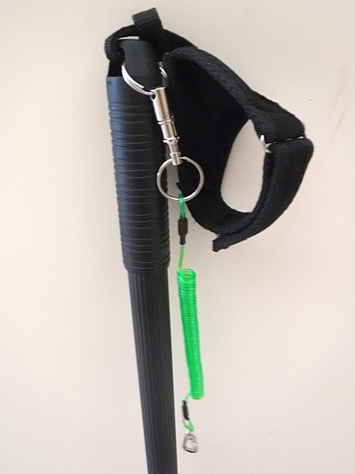
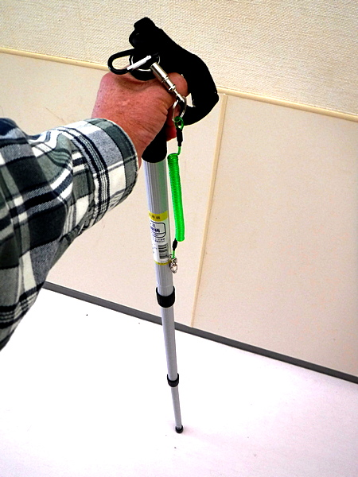
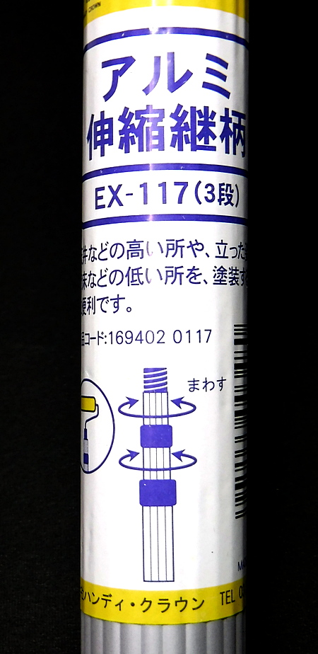
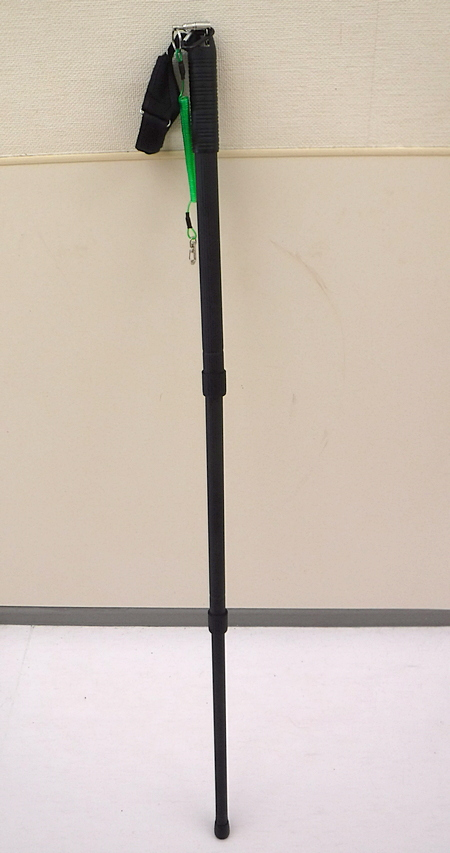

私のお気に入り
自作の道具たち ウェーディングスタッフ
お断り：免責事項
以下に書かれているウェーディングスタッフの自作方法は、あくまでも当ホームページの作者の素人的発想に基づくものであり、工業製品としての安全性・強度などの必要事項を満たしてはいません。この記事を参考に自作を試みた方が、自作品の破損や事故に遭遇しても、作者としては責任を負えませんので、ご承知置き下さいますようお願いいたします。
なぜ、自作することになったのか？
2019年の秋から使っていたトレッキングポールを流用した物では、仕舞寸法が少し長すぎた。本流のニゴイ釣りにおいて、トレッキングポールを、ランディングネットを保持するためのクリップで背中に保持してキャストしていると、足元に溜まったランニングラインにポールが絡んで困った。
さらに、来たるべき2023年のNZ再訪では、年齢から言って、おそらくはウェーディングスタッフが必要になるが (笑)、長過ぎて機内持ち込みが出来そうになく、大型バックパックにも入らない。そこで、短いウェーディングスタッフが必要となった次第。
材料と作成方法
- ペンキ塗り用アルミポール
ホームセンターを見て回ったら、高いところにペンキを塗るための、伸縮可能なアルミ製の柄を売っていた。３段階の伸縮が出来て、縮めた時の寸法は 55cm、最長に伸ばした時の寸法は 117cm で、重さは 226g であった。長さも十分で、太さ、強度も見た目には問題無さそうに見える。
これまでのトレッキングポールの重量は約 300g なので、少しは軽く出来そうである。 - 先端部用のプラキャップ
ポールの先端部に付けるためのキャップも探し、ちょっと硬質だったが、すっぽり合うプラキャップを見つけたのでそれを買った。本当はゴム製の方がグリップが良いのだろうが、とりあえずこれを使うことにする。合成ゴム系接着剤 ボンドG17 を使ってしっかりと接着した。 - 手頃なストラップ
ストラップは、トレッキングポールに付属していた物をそのまま使いました。アルミ製の柄の上端部には、紐を通せるスリットが開いていたので、そこに通した。 - 保持方法
フィッシングベスト、あるいはスリングバッグのストラップへの保持は、これもダイソーにて買ったプッシュ式の取り外し可能な金具とスパイラルコードを用いている。
ストラップと保持方法
使用時のイメージ （塗装前） - 仕上げ塗装
ニュージーランド南島のシビアなブラウントラウトには、光り物・派手な色の物は御法度なので、ダイソーにてつや消しブラックのラッカースプレーを買って来て、真っ黒に塗装して完成。


完成したウェーディングスタッフは、これまでのトレッキングポールと比較し、重さ 270g（約30g軽量化）、仕舞寸法 55cm（32cm短縮化）伸長時長さ 117cm（20cm短い）となった。
最も伸ばした時の寸法がやや短くなってしまったが、実用上は問題無いであろう。
この話を、古くからの釣友である岡田くんにしたところ、この手のポールは剪断力に弱く、いきなりポキッと折れることがあるから注意するように！ と、材料工学の専門家ならではの貴重なアドバイスをいただいた。そこで、完成品を手に取って斜めに床に立て、中央部に腕で力を加え、曲がり具合をチェックしてみました。すると、これまでのトレッキングポールとほぼ同じぐらいの曲がり方だったので、まずまず大丈夫かなと安心した。しかし、無理はしない方が良いだろう。
今シーズンはコロナウィルスの影響で、下流域のニゴイ狙いにはまだ出撃出来ていないが、本流の釣りには必須のアイテムになりそうである。源流釣行ではデイパックに収納できるので便利だと思う。
追記：６月末、久しぶりの本流ニゴイ狙いでこのウェーディングスタッフを使ってみたところ、なかなか使い勝手が良かった。伸縮の動作もスムーズで、ひねるときっちり締まって固定できる。それに、何と言っても軽く仕上がったのが嬉しいところである。わずかな軽量化だが、これまでのトレッキングポールと思うと非常に扱いが楽になった。
追記２：このウェーディングスタッフの先端に、デジカメが取り付けられたら便利だろうなと考え、アマゾンにてカメラの底部に空いている三脚などのネジ穴と合うボルトを購入した。 CAMVATE インサート ナット 1/4オス ボルト 4本 六角スパナ付き ASIN B072Q9NCTY
私のお気に入り 目次へ
サイトマップ
ホームへ
お問い合わせ